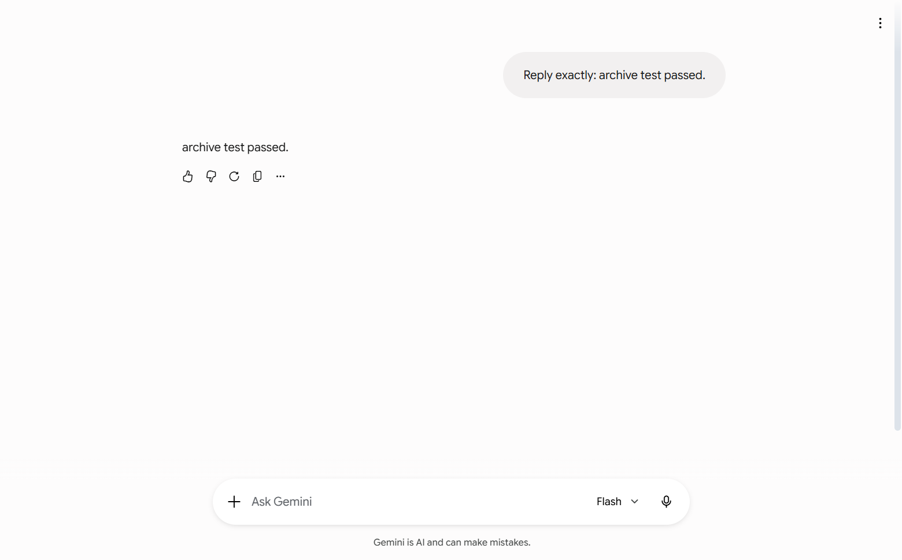
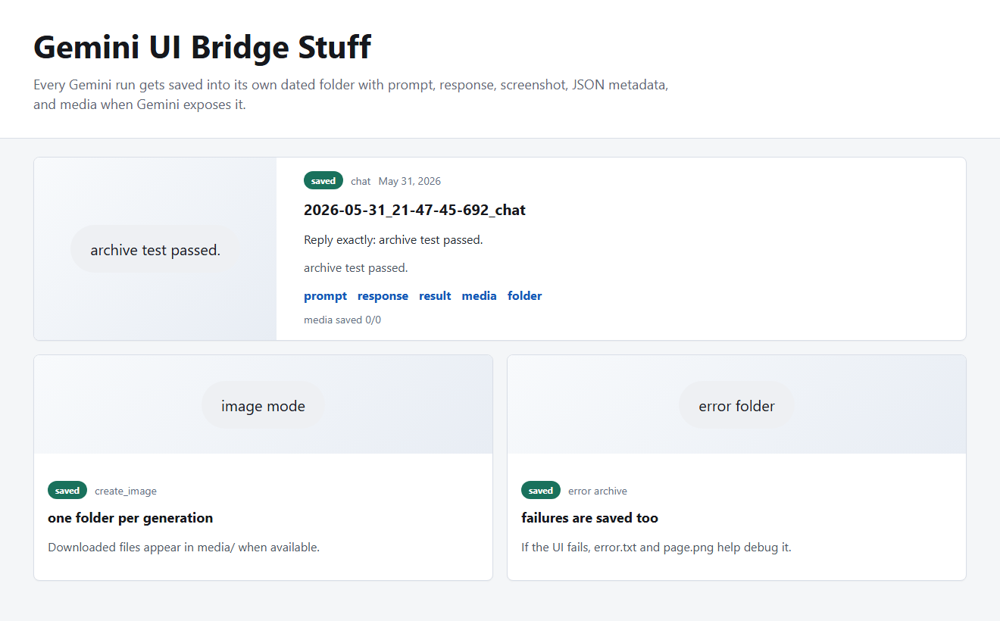
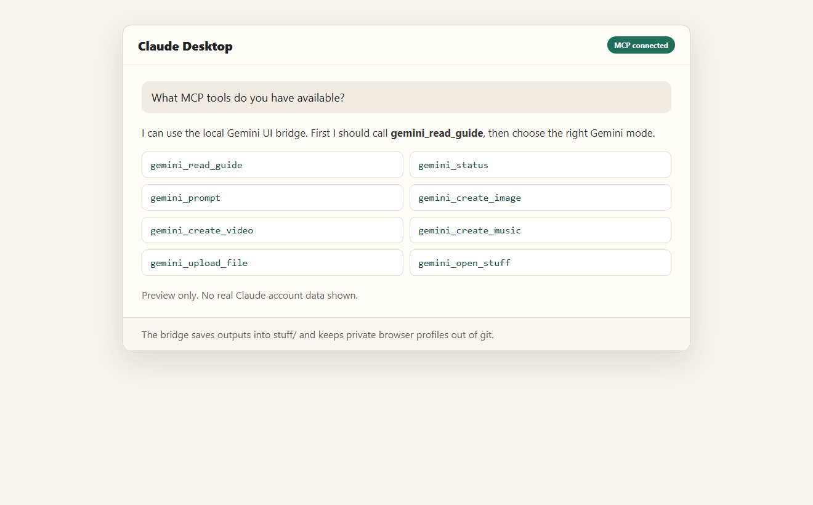

No paid API key. Local browser. MCP tools.
Make Claude talk to Gemini through your own browser.
A local bridge that opens Gemini web, pastes prompts, waits for the visible result, saves the run, and hands it back to your AI app.
This is a clever personal bridge, not a fake API.
It drives the Gemini website the way a careful human would. That makes it useful for a local assistant workflow, but it also means login checks, UI changes, and media downloads can still need you.
Tap a step and the bridge map changes.
The bridge has one job: let another AI call Gemini without touching your password, cookies, or a paid API key.
Claude sees named MCP tools like gemini_prompt and gemini_create_image. The bridge guide tells it how to use them carefully.
The README screenshots are safe on purpose.
One screenshot is cropped from a real run. The others are generated preview screens so your account, chat list, cookies, and local prompts do not leak.



Pick a Gemini mode.
The MCP exposes focused tools so Claude does not have to guess which part of Gemini to open. Click a tool below to see the recommended use.
Normal text chat through Gemini web. Best first test after login.
The stuff that should never go to GitHub.
This project controls a real browser profile. That profile is basically a logged-in browser, so it stays local.
README, scripts, MCP server, static site, examples.
Local settings and optional bridge tokens.
Browser cookies and Gemini login session.
Private prompts, screenshots, generated media.
npm run security-check
git status --ignored
git pushFour commands, then Claude can see the tools.
After login, add the MCP config to Claude Desktop and ask it: "Call gemini_read_guide, then gemini_status."